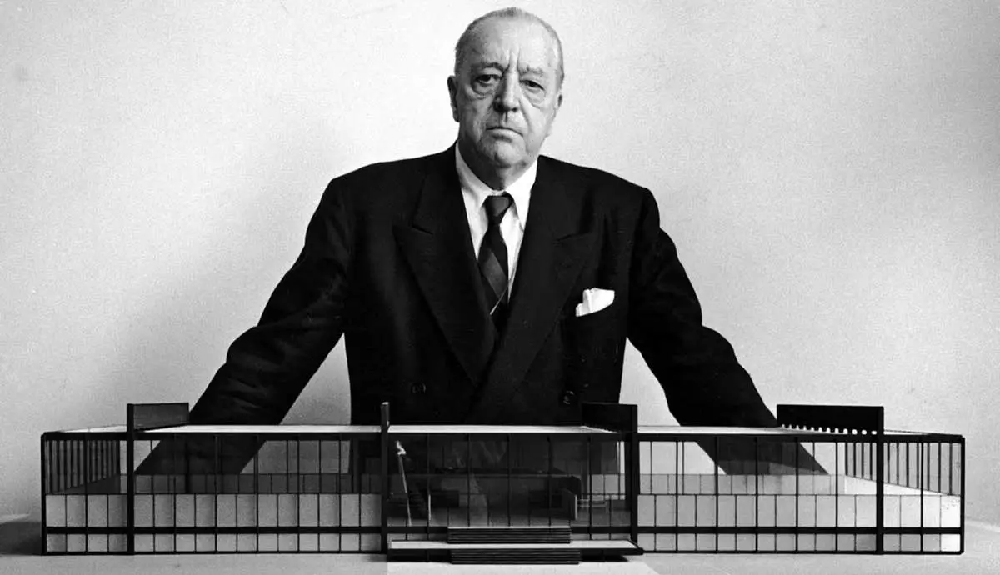
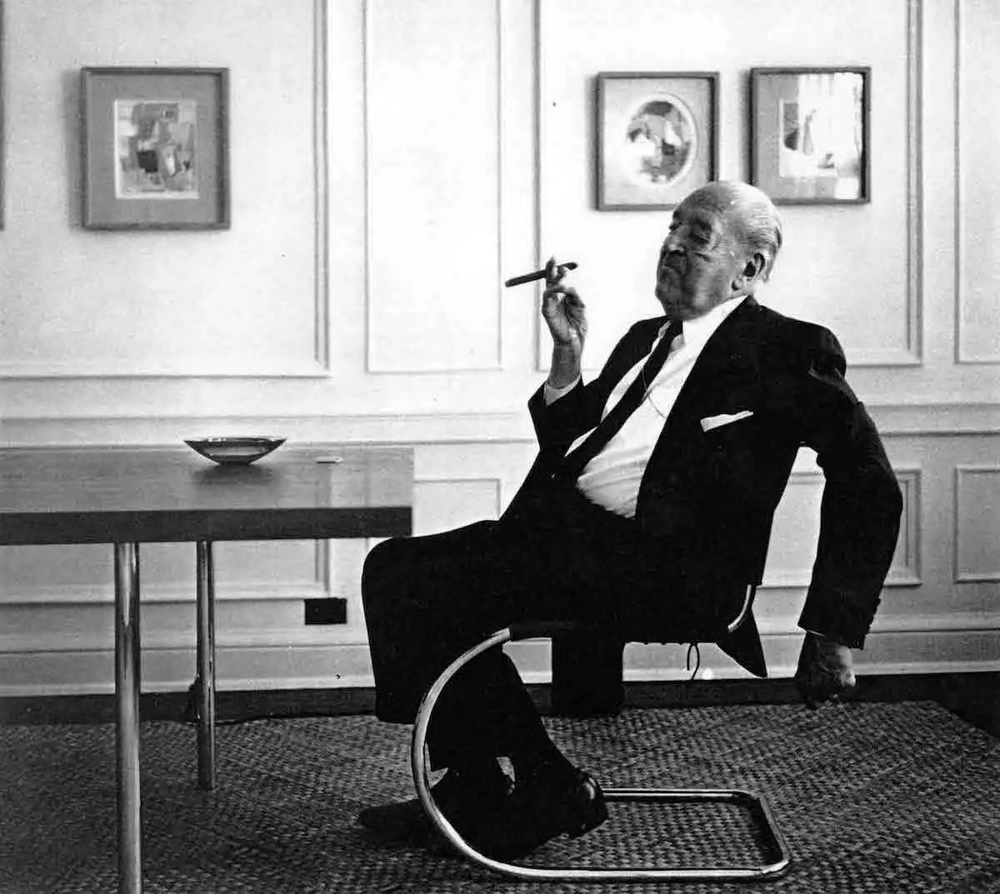
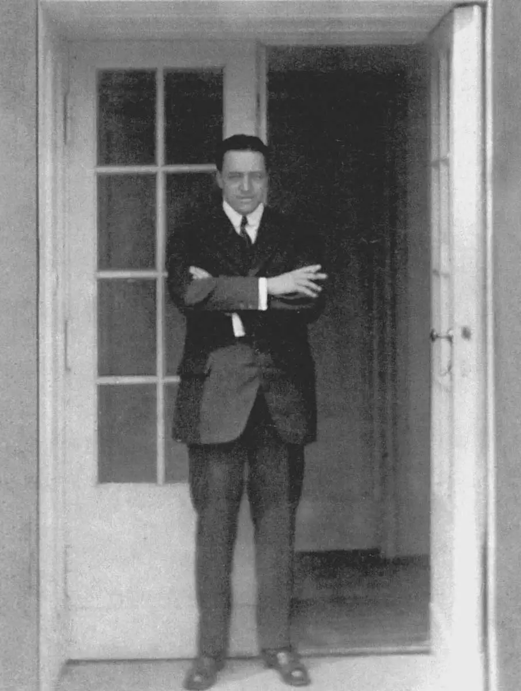
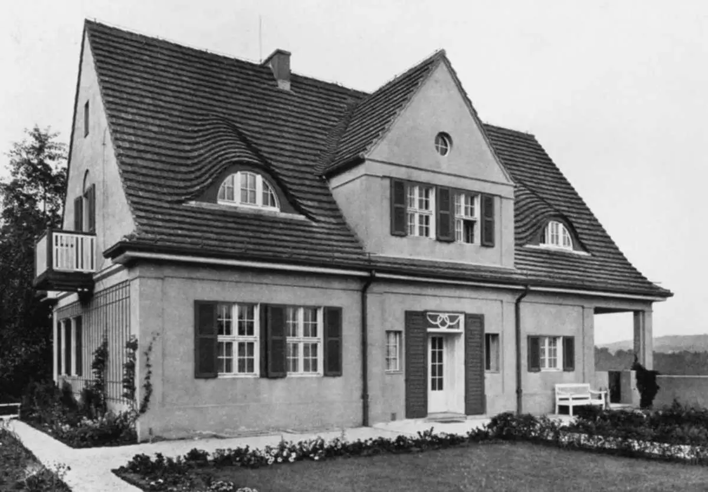
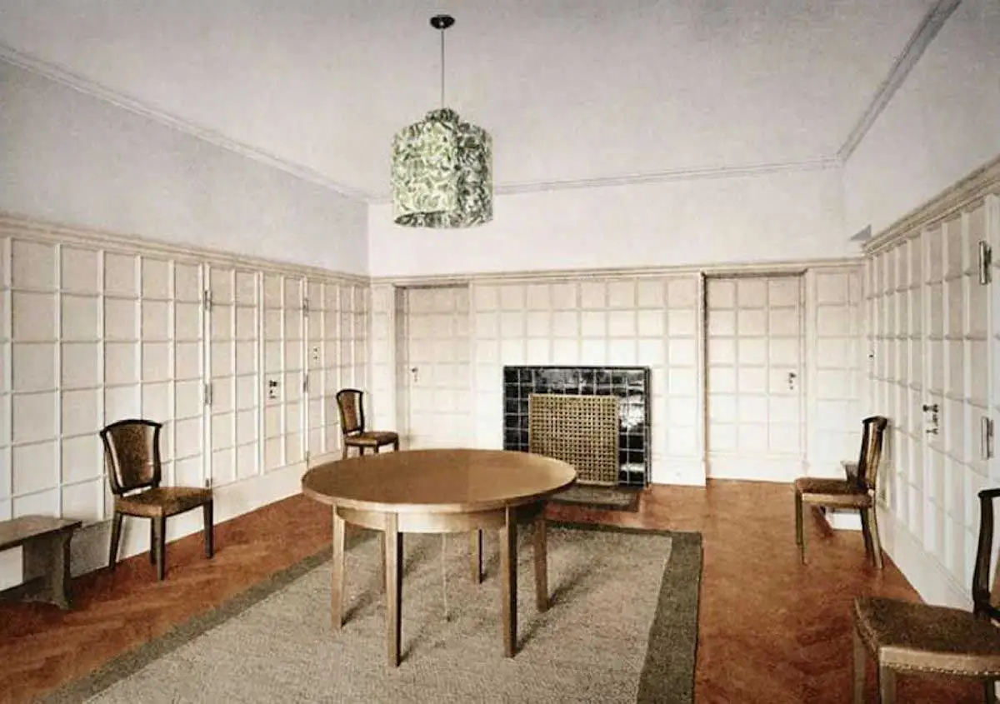
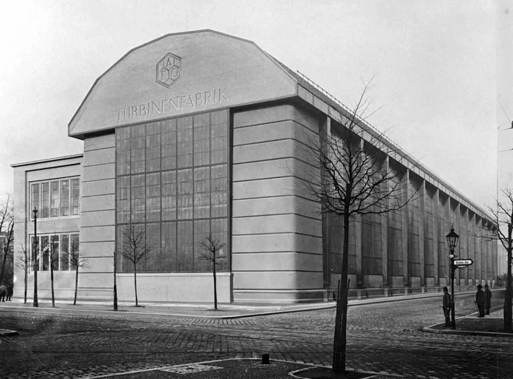
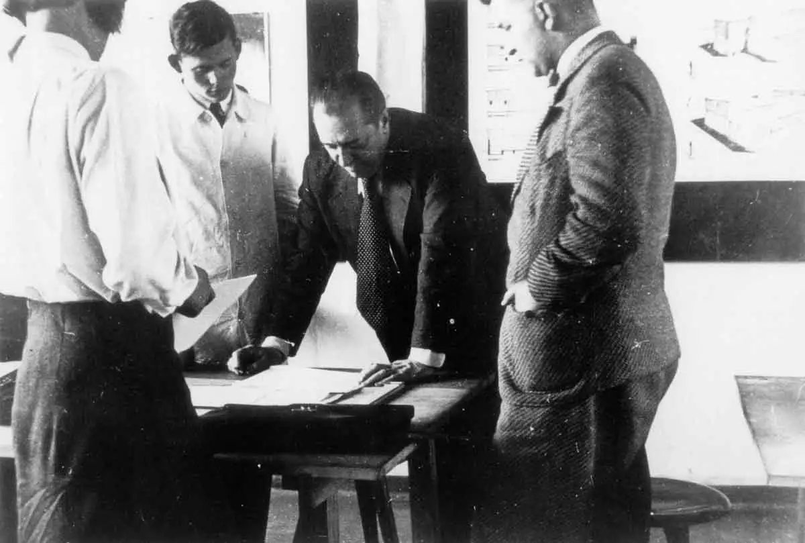
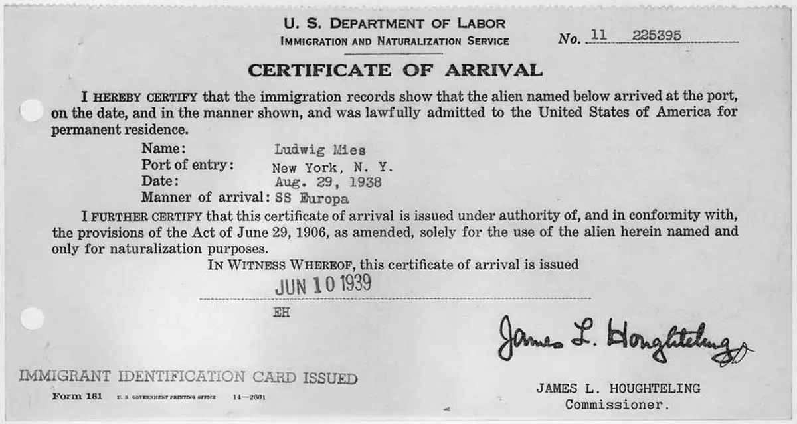
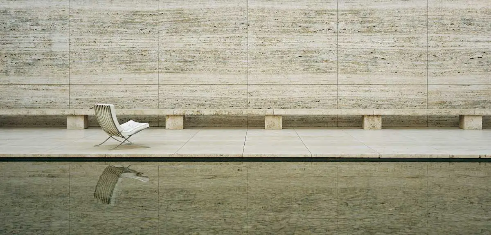

Mies van der Rohe was a pioneer of modernist architecture. Discover how his fondness of the aphorisms 'less is more' and 'God is in the details' reflects in his designs.

The German-American architect, Ludwig Mies van der Rohe, was born as Maria Ludwig Michael Mies. However, rather than being addressed with his full name, the architect was mainly referred to as Mies. A short name that appears to be very fitting for the architect’s visions on design; that vision being ‘less is more’. In fact, the name Mies has become inseparably linked to the style of this pioneer of modernist design. More than a name, it has become a symbol for his ideals, creations, and his legacy. What exactly contributed to and defined Mies’ style will be the central topic of this article. Through examples of his designs, the characteristics of his minimal style will be explored.

Before focusing on Mies van der Rohe’s designs, let’s first take a closer look at his personal background. Starting at the beginning, Mies was born on the 27th of March 1886, in the then provincial German city of Aachen. His father’s name was Michael Mies and his mother’s Amalia Rohe. This explains the name ‘Mies van der Rohe’, which Mies would create for himself when he was a young adult. Important to know about Mies’ background is that for generations, his father’s family had worked passionately as stonemasons in their ‘marble business and atelier’. Even though their main product were gravestones, growing up in this environment contributed to Mies’ interest in architecture. As Mies grew up, his father maintained the business together with Mies’ older brother. They lived a fairly comfortable life as a middle-class family.

Fitting to the family’s business, Mies’ primary education was followed up by a two-year program at the trade school. Trade school should not be confused with a crafts school, as it did not offer a higher-level theoretical curriculum. In an interview in 1968, Mies himself said the following about his education: “trade school offered the kind of two-year course that would enable a graduate to get a job in an office or a workshop. Great stress was laid on drawing, because it was something everybody had to know. What you needed on a job, that’s what they [those practically trained] learned to do, masterfully.” Like Mies said, his heart belonged to the practical, and therefore he didn’t feel like he missed out on anything during his education. After his two-year training at the trade school, Mies followed his passion for the practical by working at various job sites. Among these were building sites and several Aachen ateliers. His first paid job was that of draftsman at a stucco factory.

Because of the skill that Mies van der Rohe demonstrated in his work at the factory, it became unlikely for him to return to his father’s stone atelier. While continuing his career by working for two architects in Aachen, Mies showed so much talent that an architect named Dülow advised him to move to Berlin. Not knowing how to make the transition, Dülow advised Mies to apply to the advertisements in the journal Die Bauwelt. Mies took this advice, and after receiving offers from both places he wrote to, the move to Berlin became reality. From 1905 onwards, Mies lived and worked in Berlin, where he first learned how to work with wood.
It is also in this phase that Mies van der Rohe met the well-established painter, sculpture and illustrator called Bruno Paul, who had turned to the applied arts and architecture. In 1907, Paul even became one of the founding members of the Deutscher Werkbund, which was among the most important forces behind the development of German arts, crafts and architecture. It was at Paul’s schools that Mies learned about and grew a fondness for furniture design. Subsequently, Mies worked alongside Paul for a few years, where he received his first independent commission to design a house in the upper-class Potsdam and Berlin suburb Babelsberg. The building was called the Alois Riehl House, after the commissioner.

The exceptional style and execution of Mies’ work was then noticed by Paul’s office manager Paul Tiersch, who had previously worked for the famous architect Peter Behrens. As promised, Tiersch informed Behrens of any talented youngsters he came across, including Mies van der Rohe. It was through his notice that Mies was invited by Behrens to join his studio. An offer he happily accepted. At this studio, Mies would work alongside other figures who would later become pioneering architects themselves. Among these were Le Corbusier and Walter Gropius.

While Peter Behrens had been a key figure of the flowing German Jugendstil style, his views on style changed rapidly after 1900. He became an avant-garde thinker, who believed that the spirit (Zeitgeist) of the industrial age was revealed best through strong geometrical lines. Having started at Behrens studio in 1908, also Mies further developed his avant-garde ideas. More and more he aspired for simplicity in forms on both the exteriors and interiors of his buildings. While the surface of most of his exteriors was smooth and simplified, his interiors would be clean and very minimally decorated. In addition, he started making use of industrial materials like plate glass and steel. He developed a strong liking for the aphorisms ‘less is more’ and ‘God is in the details’, and his designs would answer to these simple but strong phrases.

It could be said that Mies van der Rohe was a man of his time. During the twentieth and early thirties his talent, portfolio and reputation soared. He truly lay the groundwork for his important legacy and became a key figure of modernist design during this phase. Something that made him the perfect candidate to take over the position of director of The Bauhaus in 1933. The last director in fact, because The Bauhaus had to close down due to rising political pressure. Moreover, this was not only the only matter affected by Germany’s grim political climate of that period. Any avant-garde creators, among which modern architects, were increasingly pressured to be abandon their artforms and ideas. For this reason, Mies moved to the American city of Chicago in 1938, where he became the head of the College of Architecture at the Armour Institute of Chicago. After a merger, this institute is now called the Illinois Institute of Technology.

Just like many other modern artists who fled Europe during the 1930s and 40s, Mies flourished in America’s positive climate for avant-garde art. Especially after the end of World War two, Mies received many commissions that further shaped his brilliant legacy. Especially during the 1950s and ‘60s, Mies expanded his oeuvre with the build of multiple pioneering skyscrapers. In the following chapters, a few of Mies van der Rohe’s key designs will be explained and analysed. This way you hopefully get a good idea of what defined Mies’ style.

If there is one of Mies van der Rohe’s designs that cannot be excluded, it is the Barcelona Pavilion. The building was designed in collaboration with textile, furniture, and interior designer Lilly Reich, with who Rohe worked closely together during the 1920s and early 1930s. The Barcelona Pavilion was originally called the German Pavilion, as it was the German contribution to the 1929 Barcelona International Exposition. Only later it became known as the Barcelona Pavilion. The story behind the renaming has to do with the pavilion’s reconstruction. After the exposition the building was dismantled and the pieces were sent back to Germany to be reused. However, fifty years after the exposition, the Barcelona City Council realised that the pavilion had had a significant impact on the course of architectural development. For this reason, they gave order to rebuilt it. The reconstruction of the Pavilion happened between 1983 and 1986, and was conducted by a group of Catalan architects.
What makes the Barcelona Pavilion so special, is that it is made of big pieces of colourful marble from various places in the world. Among these places are Greece, Rome and the Northern African Atlas Mountains. For the reconstruction, the marble was again collected from these places. Apart from marble, Mies also made use of unique stones like red onyx and travertine. What makes this pavilion in particular fit the aphorisms ‘less is more’ and ‘God is in the detail’ is that the minimal structure and decorations speak for themselves, while the luxury materials resonate quality. There is no decMoreover, regardless of the heavy stone walls, the Barcelona pavilion is light due to its open plan and the use of glass and steel.
Read the full article on www.thecollector.com